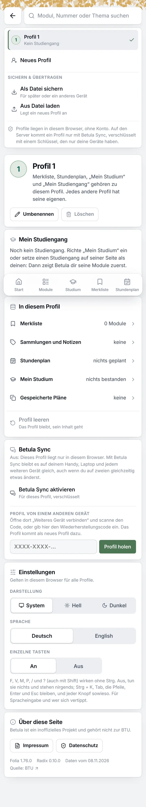
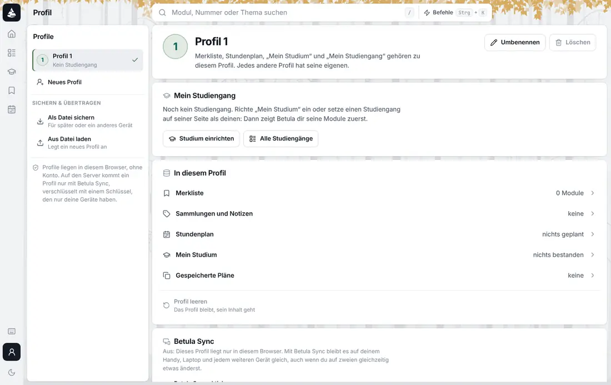

Folia · Profil · zweite Runde · 8. November 2026
Zweite Runde: das Menü aus B mit der Profilseite aus A, ganz oben. Darunter die erste Runde: drei Konzepte für die Profilseite und das Menü am Profil-Knopf, jedes als Prototyp am Rechner und am Handy. Sie haben dieselbe Aufgabe: Was für den ganzen Browser gilt, kommt von der Profilseite weg, Betula Sync wird die Hauptsache, und die Seite zeigt Zahlen statt Links zu den Tabs. Sie unterscheiden sich darin, wo Darstellung und Sprache wohnen und wo man ein Gerät verbindet.
„Als erstes sollten die profil unabhängigen einstellungen wo anders hin. Also sowas wie sprache und system theme. Maybe die beiden sogar in quick access. … betula sync, was ich persönlich als sehr essentiell einstufen würde. Also das ist so die main sache, die man machen möchte, wenn man mit dem handy am pc ist. … Du kannst gerne ein paar stats zeigen. Aber ich brauche nicht noch ein link mehr zu mein studium.“
Was alle drei teilen
Schon gemacht, weil du es direkt gesagt hast: Der Link fürs nächste Gerät heißt /sync#…, die Rechtsseiten /imprint und /privacy; die alten Adressen leiten weiter (Folia 1.77.2, auf canary).
Zweite Runde
Das Menü ist das aus B: Profile, „Profil verwalten“, „Geräte“ mit dem Stand von Sync, darunter eine Reihe kleiner Knöpfe für System, Hell, Dunkel und DE/EN, im Fuß die Rechtsseiten. Die Profilseite ist die aus A: eine Spalte mit Kopf und Zahlen, Betula Sync mit den Geräten und „Gerät verbinden“, die Daten des Profils. Die eigene Seite für die Geräte aus B entfällt, denn die Geräte stehen jetzt auf der Profilseite.
„Also mach mal eine kombinaion aus dem menu von B und der profilseite von A.“
Öffne das Menü unten in der Leiste und klick Geräte. Oben rechts über dem Prototyp schaltest du um, wohin „Geräte“ führt: zum Sync-Teil der Profilseite (die Seite öffnet und springt zu Betula Sync) oder direkt in den Dialog zum Verbinden. Die drei Symbole im Menü sind System, Hell, Dunkel.
Zweite Runde · das Ende der Seite, überarbeitet
Die Gefahrenzone war rot umrandet, rot überschrieben und hatte rote Knöpfe mit einem „ד, das weder zu Leeren noch zu Löschen passt: der lauteste Teil der Seite, für das, was man am seltensten tut. Jetzt ist sie ruhig wie der Rest, und rot wird es erst in der Rückfrage. Drei Wege, oben rechts über dem Prototyp umzuschalten („Ende der Seite“):
„Fast gut. Aber die danger zone muss nochmal überarbeitet werden die sieht aus wie shit.“
Zum Sync-Teil der Profilseite, oder direkt in den Dialog „Gerät verbinden“. Vorschlag: zur Profilseite. So bleibt das Menü, wie du es aus B gewählt hast: „Geräte“ zeigt den Stand und führt dorthin, wo die Geräte stehen; verbunden wird mit dem Knopf dort.
Liste, leise Links oder „⋯“ im Kopf. Vorschlag: Liste. Sie erklärt jede Aktion in einem Satz, sieht aus wie der Rest der Seite, und rot ist nur die Rückfrage.
Vorschlag: ja, mit Tooltip und Beschriftung für Screenreader. Mond/Sonne in der Leiste am Rechner bleibt dazu.
Aus der ersten Runde noch offen. Vorschlag: ja, Darüberfahren weiter auch.
Erste Runde · was heute ist · canary, Folia 1.76.0
Auf dem Handy ist die Seite mit einem leeren Profil 2,5 Bildschirme lang. Betula Sync beginnt nach 1,4 Bildschirmen, Hell und Dunkel nach 1,8, das Impressum nach 2,3.


Erste Runde · Konzept A
Das Menü am Profil-Knopf wird der Schnellzugriff: unter den Profilen „Gerät verbinden“ mit dem Stand von Sync und „Profil verwalten“, darunter Darstellung und Sprache als Auswahl, im Fuß die Rechtsseiten. „Gerät verbinden“ öffnet einen Dialog über der Seite, wo man gerade ist. Die Profilseite ist eine Spalte: Kopf mit Zahlen, Betula Sync, Daten.
Klick unten in der Leiste auf L: Das Menü öffnet. Stell Dunkel ein, wechsle zu Zweitstudium (noch privat) und klick Gerät verbinden. Die gestrichelten Knöpfe spielen das andere Gerät. Am Handy öffnet der Knopf rechts oben dasselbe Menü, „Gerät verbinden“ dort den Scanner.
Erste Runde · Konzept B
Verbinden bekommt eine eigene Seite, /sync, dieselbe, auf der der Link des anderen Geräts landet: links die Geräte des Profils, rechts „Gerät verbinden“ mit beiden Richtungen nebeneinander, ohne Dialog. Das Menü führt mit „Geräte“ dorthin und hat Darstellung und Sprache als eine Reihe kleiner Knöpfe. Die Profilseite zeigt Sync nur als eine Zeile mit dem Weg zur Seite.
Öffne das Menü und klick Geräte. Wähle rechts eine Richtung; die gestrichelten Knöpfe spielen das Handy. Die drei Symbole im Menü sind System, Hell, Dunkel; DE und EN die Sprache.
/sync ist zugleich die Seite, auf der ein Link ankommt: Sie sagt dann „Profil kommt …“.Erste Runde · Konzept C
Das Menü bleibt kurz: Profile, Profil verwalten und „Einstellungen“, ein kleiner Dialog mit Darstellung, Sprache, Einzelnen Tasten und den Rechtsseiten. Die Profilseite hat unter dem Kopf drei Reiter: Übersicht, Geräte, Daten. Verbinden geschieht im Reiter Geräte, an Ort und Stelle.
Öffne das Menü und klick Einstellungen. Dann Profil verwalten und den Reiter Geräte; dort klappt „Gerät verbinden“ unter der Liste auf.
Erste Runde · im Vergleich
Tipps von einer beliebigen Seite aus, am Handy; am Rechner gleich, wenn ein Klick das Menü öffnet.
| A · Alles am Knopf | B · Seite für Geräte | C · Einstellungen, Reiter | |
|---|---|---|---|
| Hell, Dunkel, System | 2 | 2 | 3 |
| Sprache | 2 | 2 | 3 |
| Gerät verbinden (Code steht da) | 2, ein Dialog | 3, eigene Seite | 4, Reiter |
| Stand von Sync sehen | im Menü | im Menü | auf der Seite, Reiter Geräte |
| Profilseite am Handy | eine Spalte, etwa 1,4 Bildschirme | kürzer, Sync als eine Zeile | je Reiter unter einem Bildschirm |
| Einträge im Menü (zwei Profile) | 11 | 9 | 5 |
| Wo neue Browser-Einstellungen hinkämen | ins Menü, das dann wächst | in die Reihe, nur kleine | in den Dialog |
| Neu zu bauen | Dialog statt Teil der Seite | eine Seite /sync für beides | Einstellungs-Dialog, Reiter |
Erste Runde · Empfehlung
Du hast Sync die Hauptsache genannt, wenn man mit dem Handy am Rechner sitzt, und Darstellung und Sprache „vielleicht sogar in quick access“. A macht beides zwei Tipps von jeder Seite, ohne die Seite zu verlassen. B ist gut, wenn Verbinden eine Aufgabe für sich sein soll; seine kleinen Symbole sind aber schwerer zu lesen. C ist am ordentlichsten, nimmt Sync aber vom Knopf weg.
Die Seite /sync, auf der ein Link ankommt, kann in A die beiden Wahlen aus B zeigen, wenn man sie direkt öffnet. Vorschlag: ja, das kostet kaum etwas.
Wenn mehr Browser-Einstellungen kommen, wandern sie in einen Dialog „Einstellungen“ am Ende des Menüs; Darstellung und Sprache bleiben oben. Vorschlag: erst, wenn es eine dritte gibt.
Erste Runde · Fragen
Vorschlag: A, mit den beiden Wahlen aus B auf /sync.
Heute führt er zur Seite, das Menü kommt beim Darüberfahren. Vorschlag: Klick öffnet das Menü, Darüberfahren weiter auch; zur Seite über „Profil verwalten“ oder „Profil“ in den Befehlen.
Vorschlag: ja, ein Klick für den häufigsten Wechsel.
Die meiste Arbeit: Kamera (heute verbietet der Server sie), ein QR-Decoder für Safari und Firefox, eine kleine Änderung an Phloem. Vorschlag: ja, als zweiter Schritt nach dem Ordnen.
Vorschlag: gemerkt; geplant mit Semestern; bestanden mit LP; Sammlungen und Notizen; gespeicherte Pläne. Keine Prozent zum Abschluss.
Daten: canary.betula.app, Folia 1.76.0, Stand 08.11.2026 · Name, Studiengang und Zahlen im Prototyp sind Beispiele · Entwurf, nichts davon ist gebaut, bis auf die Adressen.